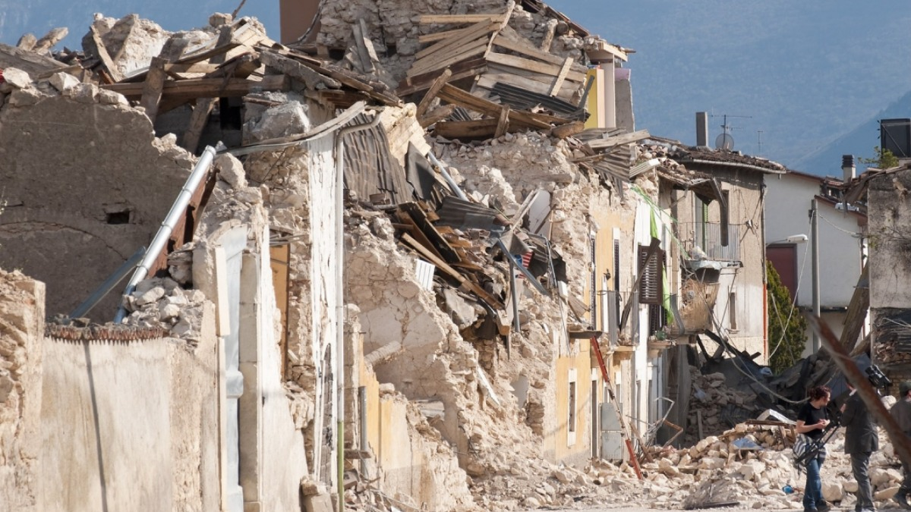
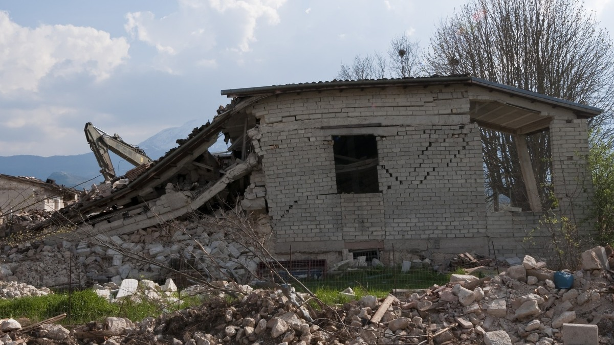
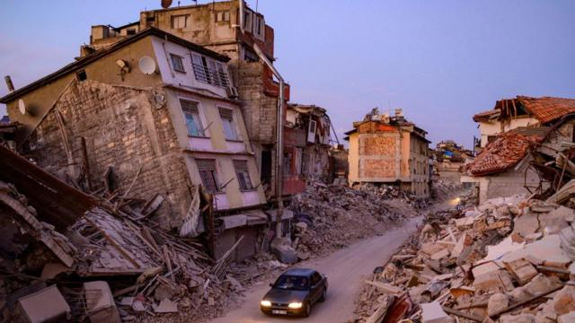
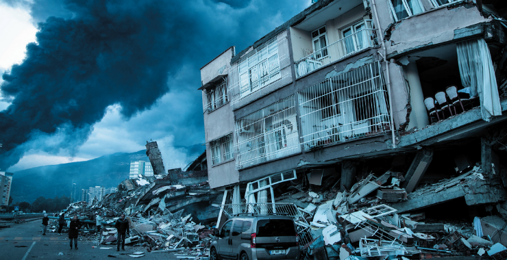

Tektonik Depremler

En yaygın ve bilinen deprem türüdür. Yer kabuğundaki tektonik levhaların hareketi sonucu oluşur.
Sığ Depremler

Yer kabuğunun yakın yüzeylerinde, genellikle 0-70 kilometre derinliklerde meydana gelir.
Derin Depremler

Yer kabuğunun daha derin katmanlarında, genellikle
70-300 kilometre derinliklerde oluşur.
Okyanus Depremleri

Deniz tabanında meydana gelen depremlerdir. Genellikle deniz tabanındaki fay hatlarının kırılması sonucu oluşurlar.